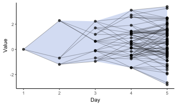

Code
library(tidyverse)
library(ggplot2)
# Define a function that simulates "branching" from day t-1 to day t
simulate_branching <- function(n_days = 5, # total days
K = 3, # children per node
phi = 0.7, # AR(1) coefficient
sigma = 1.0, # noise std dev
x0 = 0 # initial value on day 1
) {
# We'll keep a data frame of points (each "dot") with:
# ID = unique ID for each point
# day = which day the point is on
# value = the y-value (in an AR sense)
# parentID = ID of the parent point (so we can connect them)
# parent_val = parent's y-value
# Start with day 1
points <- data.frame(
ID = 1,
day = 1,
value = x0,
parentID = NA, # no parent for the first dot
parent_val = NA
)
current_max_ID <- 1
# Loop over days 2 to n_days
for(d in 2:n_days) {
# Extract all points from the previous day
prev_day_points <- subset(points, day == d - 1)
# For each point from day d-1, generate K new child points for day d
new_points_list <- lapply(
seq_len(nrow(prev_day_points)),
function(i) {
parent_id <- prev_day_points$ID[i]
parent_val <- prev_day_points$value[i]
# AR(1): child value = phi * parent_val + random noise
child_values <- phi * parent_val + rnorm(K, mean = 0, sd = sigma)
data.frame(
ID = current_max_ID + seq_len(K), # assign new IDs
day = d,
value = child_values,
parentID = parent_id,
parent_val = parent_val
)
}
)
# Combine into one data frame
new_points <- do.call(rbind, new_points_list)
# Update the overall data frame
points <- rbind(points, new_points)
# Update the max ID so the next iteration doesn’t reuse IDs
current_max_ID <- max(new_points$ID)
}
return(points)
}
set.seed(7)
df_branch <- simulate_branching(
n_days = 5,
K = 3,
phi = 0.7,
sigma = 1,
x0 = 0
)
df_uncertainty <- df_branch |>
group_by(day) |>
summarise(min_value = min(value),
max_value = max(value))
ggplot() +
geom_ribbon(df_uncertainty, mapping = aes(ymin = min_value, ymax = max_value, x = day), fill = "#204fc1", alpha = 0.2) +
geom_segment(df_branch, mapping = aes(
x = day - 1,
y = parent_val,
xend = day,
yend = value
), alpha = 0.3) +
geom_point(df_branch, mapping = aes(x = day, y = value), size = 2, alpha = 0.7) +
scale_x_continuous(limits = c(1, 5)) +
labs(x = "Day", y = "Value") +
theme_classic()
